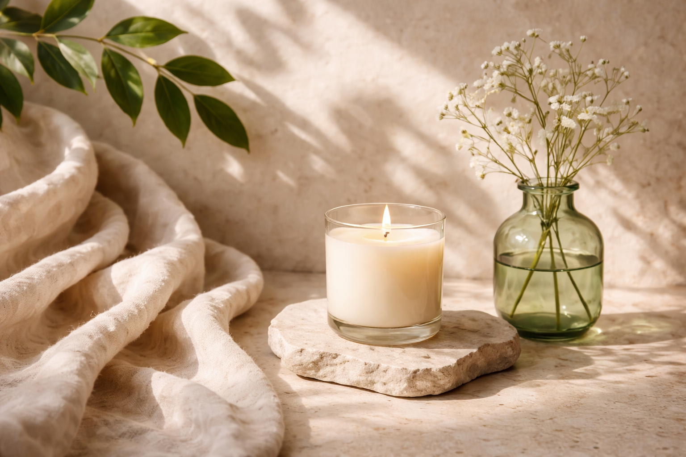

Our Story
ALORA was born from a simple idea — that skincare should feel as good as it looks. What started as a personal journey to find gentle, effective products soon became a deeper passion for creating something meaningful.
Inspired by nature and the desire to simplify skincare, we began exploring botanical ingredients and timeless beauty rituals. We wanted to create products that not only care for the skin, but also bring a sense of calm into everyday life.
ALORA is not just a brand — it is a reflection of mindful beauty, where every detail is designed with intention.
